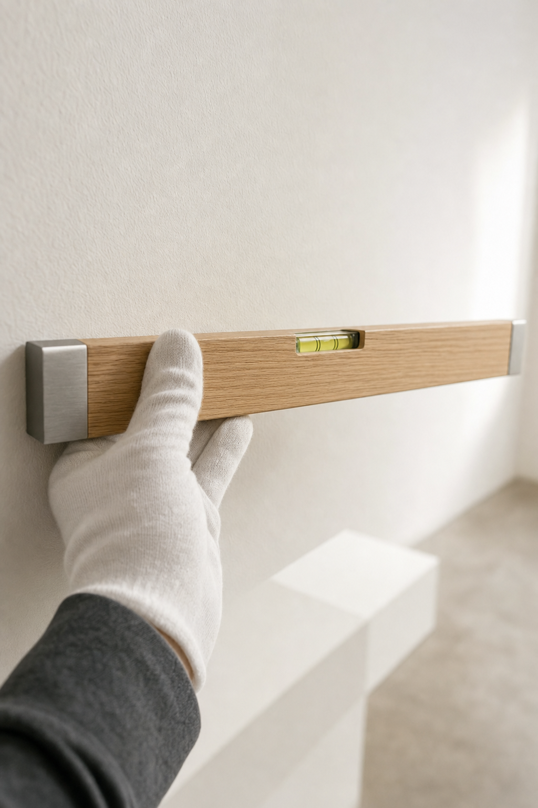
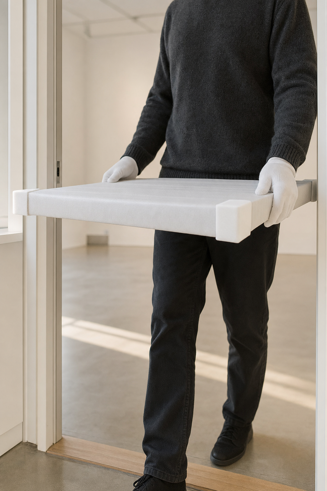

01 · Why now
Every visit, on purpose.
James, Nelson Taylor here. I direct and shoot brand content in Dallas–Fort Worth, and the Texas Design Week schedule is what brought me to your site: it lists a salon talk and book signing at the gallery on Tuesday, November 10.
Your site describes a 5,200-square-foot gallery in the Dallas Design District with a rotating group show, and it says plainly: open by appointment.
That's the line I kept coming to. A gallery that opens by appointment is a room people plan an hour around. The day on this page puts that room on a phone, in motion: its scale, its light, and the quiet of a floor that has been set for whoever booked the hour.
“From initial discovery through final installation…”
— from the J Williams Fine Art site
Installation is part of the work your site describes, so it's part of what the day films: a work arriving wrapped, carried through the door, a level set against a bare wall. In every frame on this page the work stays wrapped. What appears on camera is your call and the artists' to make.

02 · The shot list
The floor.
One day at the gallery, on a date you choose, with the walls however you want them. Six setups, standing in a row like plinths on a gallery floor: hands, light, walls and floor. No faces, and no artist's work unless you and the artist want it there.
1 · the floor, first lightThe room at restThe gallery before anyone arrives, wide and slow at eye height, the first light reaching across the floor.Creative direction — treatment frames, not final footage. 2 · the long wall, all dayLight across the wallsOne locked frame on a long white wall from morning to evening, the light travelling across it, cut down to seconds.Creative direction — treatment frames, not final footage. 
3 · the door, a work arrivingThe arrivalA wrapped work coming through the door on gloved hands. The wrap, the grip and the care, never the work.Creative direction — treatment frames, not final footage. 4 · a bare wall, the levelThe levelA level set against the wall and the bubble drifting to centre. The smallest shot of the day, and the one the format is built on.Creative direction — treatment frames, not final footage. 5 · the plinths, emptySet and readyPlinths and open floor in their places: the room as it looks the minute before a visit.Creative direction — treatment frames, not final footage. 6 · eye height, walkingThe walk-throughA slow walk through the gallery at a visitor's eye height, composed vertical from the first step.Creative direction — treatment frames, not final footage.
All day, the A7RV pulls stills from the same setups: a bank of photographs for the site, the grid and anyone writing about the gallery.
03 · The format
One wall a week.
The level shot becomes a format. On the shoot day I'd frame several walls the same way, at the same height and on the same lens: the light crossing the wall, the level touching it, the floor in front of it set. Cut one wall at a time, it gives the feed a rhythm it can keep through the quarter, and no one at the gallery ever has to be on camera.
Which works appear on those walls, if any, is a question for you and the artists, and it's the first one I'd ask rather than assume. The format holds with the walls bare, wrapped, or hung however you and they decide.
04 · The scope
Just the day.
Five lines. That's the whole of it.
- 01One shoot day at the galleryI direct and shoot it myself, on a date that suits your calendar.
- 02Sony FX6 + Sony A7RVCinema motion on the FX6; stills and hybrid on the A7RV.
- 03Vertical-firstEvery cut is composed 9:16 for Reels, TikTok and Shorts.
- 04An edited set of vertical videos + a stills bankAll from the same day, built to run for a quarter.
- 05Two rounds of editsAbout two weeks from the shoot to the finished set.
Everything else, including when it fits the gallery's calendar, is a conversation for a call.
05 · Who
Behind the lens.
I'm Nelson Taylor, and Taylormade Creative is my studio in Dallas–Fort Worth. I've spent fourteen years in design and creative direction; these days most of that work is brand content I direct, shoot and edit myself.
Content work includes TONI&GUY Academy, It's a Secret Med Spa and Dreamcatchers Hair. Clients over the years include Toni & Guy, Lava Cantina, KFC, IAS Academy and Curls, and I shipped one iOS app, Run It UP! Dallas.
The person composing each frame is the person cutting it, so the floor on this page is the edit you'd see.
- 14 yearsdesign and creative direction
- Cinema + stillsone kit, one day
- 9:16framed for a phone first
- Start to finishthe same eye on set and in the edit
06 · No clock
Whenever it suits. Nothing on this page needs an answer on any timeline.
If the room on this page feels like the gallery, I'd be glad to talk it through on a short call, booked the way your visitors book: by appointment. I'll walk you through the six plinths, and you can strike any that don't feel like J Williams Fine Art.
And if the season isn't right, “not yet” is a perfectly good answer. Thank you for reading this far.
Email NelsonFounder & Creative Director · Taylormade Creative
(817) 707‑1291 · taylormademd@gmail.com
www.taylormadecreative.net · @taylormade_creative